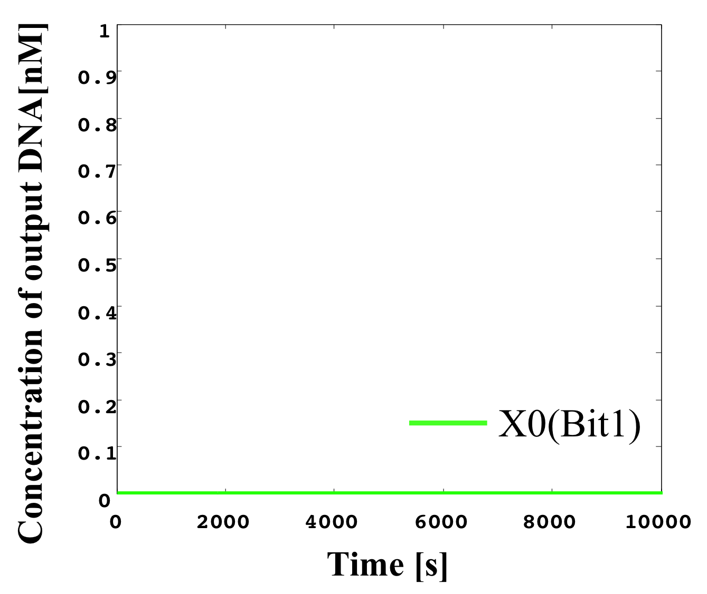
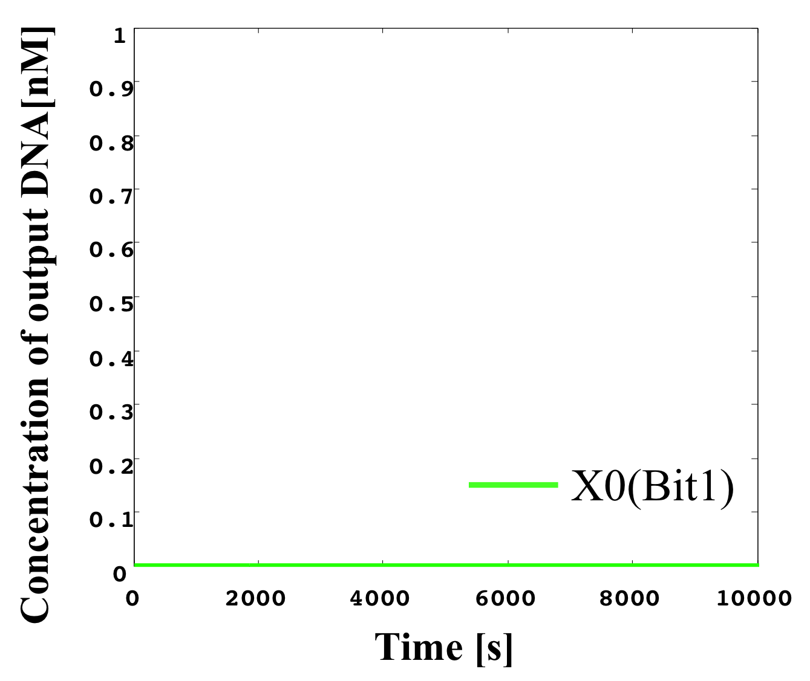

Here, we set the length of a base sequence of DNA to 15 nucleotide (nt) to ensure stable hybridization of DNA molecules. Further, we set the length of the toehold domain to 5 nt to ensure fast release of strand displacement products via DNA hybridization. These nucleotide lengths are sufficiently long to perform strand displacement reactions effectively.
We simulate the activity of the “three-bit” A/D converter using MATLAB and change the input concentrations within the 0.0−0.7 range. Table 1 summarizes the specification of input-output relation in this simulation.
Table 1: Analog and digit value correspond table
For example, if the concentration of a single-stranded DNA in the input layer of A/D converter is within 0.10 – 0.19, its output should be “0-1-0” which means that single-stranded DNAs in the first, second, third output layers are a low, high, and low concentrations, respectively. It should be noted that the specification on “which level of concentration is low or high” can be determined by designer. In what follows, for the sake of simplicity of notation, we define the concentration of single-stranded DNA in the input layer by just “input”, and a set of the concentrations of single-stranded DNAs in the output layers by just “output” of the A/D converter. In particular, in a case of three-bit A/D converter, the output is comprised of concentrations of three kind of single-stranded DNAs in the output layer, that is “X2” (bit 3), “X1” (bit 2), and “X0” (bit 1).
1.input > 0.6.
According to Table 1, X2, X1, and X0 should be high, high, and high in this case. The simulation result shows that the steady states of them are all high.

2. 0.5 nM ≦ input < 0.6 nM
According to Table 1, X2, X1, and X0 should be high, high, and low in this case. The simulation result agrees with the specification.

3. 0.4 nM ≦ input < 0.5 nM
According to Table 1, X2, X1, and X0 should be high, low, and high in this case. The simulation result agrees with the specification.


4. 0.3 nM ≦ input < 0.4 nM
According to Table 1, X2, X1, and X0 should be high, low, and low in this case. The simulation result agrees with the specification.
5. 0.2 nM ≦ input < 0.3 nM
According to Table 1, X2, X1, and X0 should be low, high, and high in this case. The simulation result agrees with the specification.

6. 0.1 nM ≦ input < 0.2 nM
According to Table 1, X2, X1, and X0 should be low, high, and low in this case. The simulation result agrees with the specification.

7. input < 0.1 nM
According to Table 1, X2, X1, and X0 should be low, low, and high in this case. The simulation result agrees with the specification.
From the above graph, we can confirm each analog value convert to digital value. Therefore, this simulation can be said succes.
Next, we changed the range of input values from 0.0 to 7.0 and conducted the simulation. Table 2 summarizes the specification of input-output relation in this simulation.
Table 2: Analog and digit value correspond table
For example, if the concentration of a single-stranded DNA in the input layer of A/D converter is within 1.0 – 1.9, its output should be “0-1-0” which means that single-stranded DNAs in the first, second, third output layers are a low, high, and low concentrations, respectively. It should be noted that the specification on “which level of concentration is low or high” can be determined by designer. In what follows, for the sake of simplicity of notation, we define the concentration of single-stranded DNA in the input layer by just “input”, and a set of the concentrations of single-stranded DNAs in the output layers by just “output” of the A/D converter. In particular, in a case of three-bit A/D converter, the output is comprised of concentrations of three kind of single-stranded DNAs in the output layer, that is “X2” (bit 3), “X1” (bit 2), and “X0” (bit 1).
1. input > 6.0 nM
According to Table 1, X2, X1, and X0 should be high, high, and high in this case. The simulation result shows that the steady states of them are all high.
/X2_111.png)
/X1_111.png)
2. 5.0 nM ≦ input < 6.0 nM
According to Table 1, X2, X1, and X0 should be high, high, and low in this case. The simulation result agrees with the specification.
/X2_110.png) 

3. 4.0 nM ≦ input < 5.0 nM
According to Table 1, X2, X1, and X0 should be high, low, and high in this case. The simulation result agrees with the specification.
/X1_101.png)
/X0_101.png)
4. 3.0 nM ≦ input < 4.0 nM
According to Table 1, X2, X1, and X0 should be high, low, and low in this case. The simulation result agrees with the specification.
5. 2.0 nM ≦ input < 3.0 nM
According to Table 1, X2, X1, and X0 should be low, high, and high in this case. The simulation result agrees with the specification.
/X2_011.png)
/X1_011.png)
/X0_011.png)
6. 1.0 nM ≦ input < 2.0 nM
According to Table 1, X2, X1, and X0 should be low, high, and low in this case. The simulation result agrees with the specification.
/X0_010.png)
7. input < 1.0 nM
According to Table 1, X2, X1, and X0 should be low, low, and high in this case. The simulation result agrees with the specification.
/X2_001.png)
/X1_001.png)
From the above graph, we can confirm each analog value convert to digital value. Therefore, this simulation can be said succes.
Next, we consider the cas e of an invariable analog input. When we define the derivative an input signal as 0, it is impossible for us to classify this signal as “high” or “low” at the first threshold gate. Unless the threshold gate has its own role, none of the gates (e.g., NOT, AND, and OR gate) can function as they each consist of threshold gates.
In the following, we show the simulation results for a threshold gate in the case of an arbitrary input that is invariable over any period of time.

Figure 1: (left) Invariable and (right) time-variable input.
From the results of Figure 1, we find that we cannot simulate any A/D converter activity when the arbitrary input is invariable and the threshold gates cannot function independently. Consequently, the input value must be variable from the initial value at any time in this A/D converter.
Finally, we consider a comparison with a sample hold circuit for an A/D converter in the microcomputer-related field of mechatronics. It is possible to prevent a situation in which an input voltage changes (breaks up) during a conversion, causing a change in the output result, by using a sample hold circuit in the A/D converter. Hence, the voltage is maintained at a fixed value when the input voltage is dispersed. However, the A/D converter with sample hold circuit is an example of a successive-approximation-register (SAR) device. Here, we implement a parallel-comparator-type A/D converter, which does not required a sample hold circuit and does not use a 2n-1 comparator in order to represent an input as an n-bit output. As regards SAR implementation, it is difficult to design a structure that maintains the voltage like a condenser in a microcomputer using DNA-based controls. In fact, it is extremely difficult to realize a sample hold circuit using DNA. In the case of SAR implementation, sample hold circuits become a key factor. If we cannot design a condenser-like structure, we should implement a parallel comparator A/D converter.